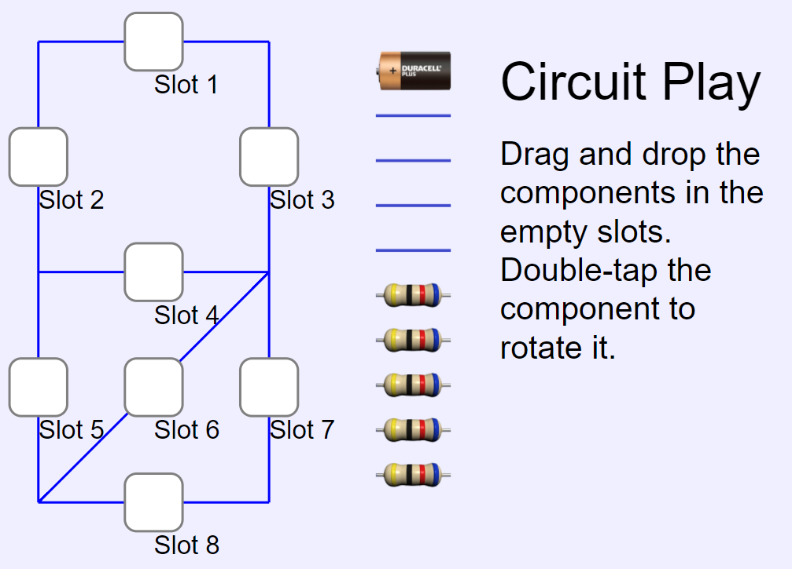

This is a simulation of a simple direct current (DC) circuit. By connecting wires and resistors at different slots, this simulation is able to calculate the effective resistance in the circuit. There are a total of 8 slots to be connected with a choice of 10 components including one battery, four wires and five resistors.
The resistance in the battery and the wires is assumed to be zero ohm.
In order to connect the components correctly, one can double-tap a component to change its orientation. Each double-tap will rotate the component 45 degree counterclockwise. A component's orentation affects its connection with the rest of the circuit.
The effective resistance of n resistors connected in series can be calculated using the following equation:
Reff = R1 + R2 + R3 + ... + Rn
The effective resistance of n resistors connected in parallel can be calculated using the following equation:
Reff = 1 / (1/R1 + 1/R2 + 1/R3 + ... + 1/Rn)
